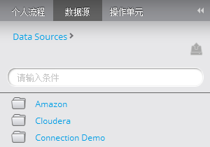
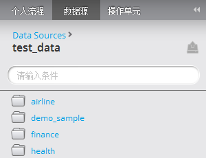
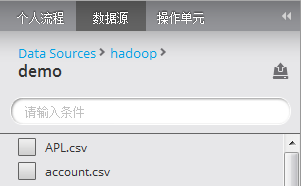

查看数据源
用户具有建模师角色才能查看个人数据。
- 选择“数据源”选项卡，用户可查看个人数据源的列表。

- 点击数据源的名称，可以浏览数据源的第一级数据
- 数据库类型的数据源，第二级显示模式（schema）。点击模式的名称，可浏览表/视图。在表/视图级，用户可把表/视图从导航栏拖拽到打开的工作流中。

- Hadoop数据源，第二级将显示hdfs的文件夹和文件，蓝色的链接是文件夹，灰色的是数据文件。单击文件夹可以查看此目录的内容，或者拖拽一个Hadoop文件到打开的工作流中。

- 导航栏显示当前级别的名称。用户通过点击导航栏上方蓝色的链接，实现浏览上一级别的文件